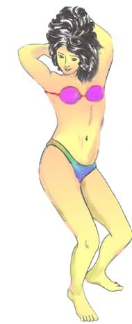

「比基尼 」泳装的由来 江銘輝 五夢網
比基尼是一种上下不连接的三点式上下二截女子游泳装，这是每个人都知道的，但是为什么这种泳装叫比基尼呢？可能知道的人并不多。认真说来「比基尼」式泳装问世已经四十多年了。比基尼(bikimi)是个环礁，它属于马绍尔群岛，60年前，1946年到1958年美国在太平洋的这个小岛(比基尼)进行氢弹和原子弹爆炸试验。该岛马上成为世人瞩目之地。

图：大胆舞女穿着「比基尼」式泳装，勇敢地向传统观念挑战，搔首弄姿，公开让记者照像。
不久，在法国巴黎服装表演会，一位大胆的泳装设计师推出了一种新式泳装。此泳装用料极薄且少，据说迭起可装进一只火柴盒，这种泳装的推出在当时服装界震动不小。由于其覆盖面积小，穿上后近似全裸，故而使当时巴黎的许多专业时装模特儿都望而生畏。然而，一位舞女却勇敢地向传统观念挑战，头一次穿上这种泳装，并公开让记者照像。
由于此泳装对世人的震动不亚于比基尼岛上所进行的氢弹试验，故称之为「比基尼」泳装。比基尼的英文名字是bikimj，在引申为三点式上下二截女子泳装后，由于bi在英文字头是双的意思，后来有一位更大胆的设计师发展了一种上空式的女子泳衣，也就是没有上截遮住乳头的部分，只剩下截遮住女子重要部分，人们无以命名就借着bikimi的名字，命名为 monokimi，因为mono在英文字头为「单」的意思，monokimi就是单截式女子游泳衣，而bikimi则为双截式女于游泳衣。
图：如今穿「比基尼」泳装已经不稀奇，但只有大胆前卫的勇士才穿monokimi。